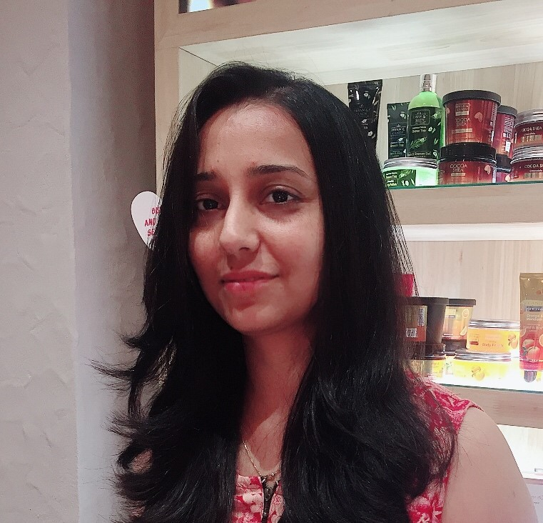

Shruti Pathak Sharma

Summary
Results-driven web developer with a passion for developing innovative solutions.
Knowledge of multiple programming languages and have experience in software Testing.
Committed to staying updated with emerging technologies and continuously enhancing technical skills.
Education
- Master of Computer Application-Rajasthan Technical University India(2006-09)
- Bachelor of Science, in Electronics-Kurukshetra University India(2003-06)
Work Experience
Skills
- Mannual testing:Integration Testing,black box and white box Testing.
- Automation Testing:Brief Knowledge of QTP,Sellinium
- SQL:Basics, select statements, joins, sub queries, update, and create statements.
Certifications
- Completed testing certification course from STL (Software Testing Labs) Bangalore, well
versed with all the concepts in testing.
Other